conn <- pg13::local_connect("polyester")
#> Connecting using PostgreSQL driver
output <-
pg13::query(conn = conn,
sql_statement =
"
SELECT c2.*
FROM omop_cdm.drug_exposure de
LEFT JOIN omop_cdm.concept c
ON de.drug_concept_id = c.concept_id
INNER JOIN omop_cdm.concept_ancestor ca
ON ca.descendant_concept_id = c.concept_id
INNER JOIN omop_cdm.concept c2
ON c2.concept_id = ca.ancestor_concept_id
WHERE c2.concept_class_id = 'ATC 4th'
;") %>%
dplyr::mutate_if(is.character, ~ dplyr::na_if(., "")) %>%
chariot::merge_strip(into = "Concept") %>%
dplyr::count(Concept)
#> Warning: replacing previous import 'magrittr::set_names' by 'purrr::set_names'
#> when loading 'chariot'
#> Warning: replacing previous import 'magrittr::extract' by 'tidyr::extract' when
#> loading 'chariot'
#> Warning: replacing previous import 'DatabaseConnector::connect' by
#> 'pg13::connect' when loading 'chariot'
#> [2020-12-30 13:29:11]
#> ✓ Open connection
#> [2020-12-30 13:29:11]
#> ✓ JDBC connection
#> [2020-12-30 13:29:11] SQL: SELECT c2.* FROM omop_cdm.drug_exposure de LEFT JOIN omop_cdm.concept c ON de.drug_concept_id = c.concept_id INNER JOIN omop_cdm.concept_ancestor ca ON ca.descendant_concept_id = c.concept_id INNER JOIN omop_cdm.concept c2 ON c2.concept_id = ca.ancestor_concept_id WHERE c2.concept_class_id = 'ATC 4th' ;
#> [2020-12-30 13:29:11] Querying...
#> [2020-12-30 13:30:11] Querying...complete
#> [2020-12-30 13:30:11]
#> ✓ Returned data has more than 0 rows
ggplot2::ggplot(output,
aes(x = reorder(Concept, -n),
y = n,
fill = Concept)) +
ggplot2::geom_col() +
ggplot2::guides(fill = "none") +
ggplot2::theme_minimal()
output <-
pg13::query(conn = conn,
sql_statement =
"
SELECT de.person_id, c2.*
FROM omop_cdm.drug_exposure de
LEFT JOIN omop_cdm.concept c
ON de.drug_concept_id = c.concept_id
INNER JOIN omop_cdm.concept_ancestor ca
ON ca.descendant_concept_id = c.concept_id
INNER JOIN omop_cdm.concept c2
ON c2.concept_id = ca.ancestor_concept_id
WHERE c2.concept_class_id = 'ATC 4th'
;") %>%
dplyr::mutate_if(is.character, ~ dplyr::na_if(., "")) %>%
chariot::merge_strip(into = "Concept")
#> [2020-12-30 13:30:16]
#> ✓ Open connection
#> [2020-12-30 13:30:16]
#> ✓ JDBC connection
#> [2020-12-30 13:30:16] SQL: SELECT de.person_id, c2.* FROM omop_cdm.drug_exposure de LEFT JOIN omop_cdm.concept c ON de.drug_concept_id = c.concept_id INNER JOIN omop_cdm.concept_ancestor ca ON ca.descendant_concept_id = c.concept_id INNER JOIN omop_cdm.concept c2 ON c2.concept_id = ca.ancestor_concept_id WHERE c2.concept_class_id = 'ATC 4th' ;
#> [2020-12-30 13:30:16] Querying...
#> [2020-12-30 13:31:00] Querying...complete
#> [2020-12-30 13:31:00]
#> ✓ Returned data has more than 0 rows
output2 <-
output %>%
dplyr::group_by(person_id) %>%
dplyr::arrange(Concept, .by_group = TRUE) %>%
dplyr::summarise(Drug_Combination = paste(unique(Concept), collapse = ", ")) %>%
dplyr::count(Drug_Combination) %>%
dplyr::arrange(desc(n))
#> `summarise()` ungrouping output (override with `.groups` argument)
pg13::dc(conn = conn)
#> [2020-12-30 13:31:03] Postgres connection to 'polyester' closed